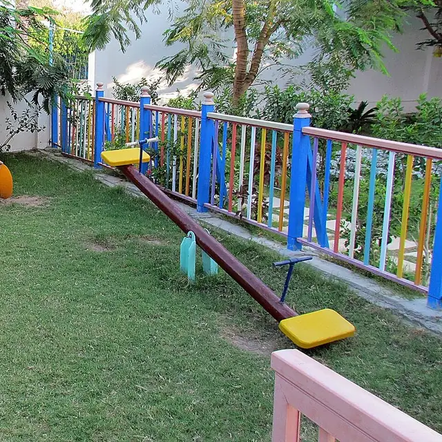

Cambridge Lower Secondary · Science 0893 · Stage 8
Balanced and Unbalanced Forces, and Moments
How balanced and unbalanced forces change motion, the skydiver story, and how to calculate moments and balance seesaws and levers — with worked examples and a Checkpoint-style quiz.
British & IGCSE › Checkpoint 8 › Checkpoint 8 Science — Complete Course
- Describe what balanced and unbalanced forces do to the motion of an object: start, stop, speed up, slow down or change direction. (8Pf.03)
- Identify turning forces and calculate them with moment = force × distance from the pivot. (8Pf.04)
1. Key words
| Word / phrase | Meaning / use |
|---|---|
| force | قوة — a push or a pull, measured in newtons (N) |
| newton (N) | نيوتن — the unit of force |
| resultant force | القوة المحصلة — the single force that has the same effect as all the forces together |
| balanced forces | قوى متزنة — forces that cancel; resultant force = 0 |
| unbalanced forces | قوى غير متزنة — forces that do not cancel; there is a resultant force |
| air resistance | مقاومة الهواء — a force that opposes motion through air |
| friction | الاحتكاك — a force that opposes motion between surfaces |
| weight | الوزن — the pull of gravity on an object, in N |
| pivot | محور الارتكاز — the fixed point something turns around |
| moment | العزم — the turning effect of a force |
| clockwise / anticlockwise | مع / عكس عقارب الساعة — the two ways something can turn |
| newton metre (N m) | نيوتن متر — the unit of a moment |
2. Forces and resultant force
A force is a push or a pull. Forces are measured in newtons (N) with a newton meter (force meter). In a diagram we draw a force as an arrow: the arrow points in the direction of the force, and a longer arrow means a bigger force.
Most objects have several forces acting on them at once. The resultant force is the single force that would have the same effect as all of them together:
- Forces in the same direction: add them.
- Forces in opposite directions: subtract the smaller from the larger. The resultant acts in the direction of the larger force.
- If the resultant force is zero, the forces are balanced. If it is not zero, they are unbalanced.
3. Balanced forces
When the forces on an object are balanced (resultant force = 0), its motion does not change:
- An object that is still stays still. A book on a table: its weight (down) is balanced by the support force of the table (up).
- An object that is moving keeps moving at the same speed in the same direction. It does not slow down and stop.
"If the forces are balanced, the object must be still." Wrong! Balanced forces mean no change in motion. A car moving at a steady 20 m/s on a straight road has balanced forces. Forces are needed to change motion, not to keep something moving.
4. Unbalanced forces
When the forces are unbalanced, there is a resultant force and the motion changes. What happens depends on the direction of the resultant force:
| Resultant force… | Effect on motion | Example |
|---|---|---|
| in the same direction as the motion | speeds up (accelerates) | A car driver presses the accelerator: driving force > air resistance + friction. |
| opposite to the motion | slows down (decelerates) | A cyclist stops pedalling: friction and air resistance slow the bicycle. |
| on a still object | the object starts to move in the direction of the resultant | A football is kicked. |
| at an angle to the motion (sideways) | changes direction | A car turning a corner; a ball hit by a bat. |
The skydiver — balanced and unbalanced forces in one story. Checkpoint loves this example. Learn the five stages:
| Stage | Forces | Motion |
|---|---|---|
| 1. Just jumped | weight > air resistance (air resistance is small at low speed) | speeds up |
| 2. Falling faster | air resistance increases as speed increases, but weight is still bigger | still speeds up, but more slowly |
| 3. Steady fall | air resistance = weight — balanced | constant speed (terminal velocity) |
| 4. Parachute opens | air resistance > weight (the big parachute has a large area) | slows down |
| 5. Slower steady fall | air resistance falls as she slows until it = weight again — balanced | new, much slower constant speed for a safe landing |
- القوى المتزنة (المحصلة = صفر): الجسم الواقف يفضل واقف، والجسم المتحرك يفضل ماشي بنفس السرعة وفي نفس الاتجاه.
- القوى غير المتزنة: الحركة بتتغير — الجسم يسرّع، أو يبطّأ، أو يغيّر اتجاهه، أو يبدأ يتحرك.
- المحصلة: لو القوتين في نفس الاتجاه نجمع، ولو عكس بعض نطرح، والاتجاه بيكون مع القوة الأكبر.
5. Turning forces: moments
A force can make an object turn around a fixed point called the pivot. Opening a door, using a spanner, riding a seesaw and lifting the lid of a tin with a spoon are all examples. The turning effect of a force is called its moment.
moment = force × perpendicular distance from the pivot. Unit: newton metre (N m) when the distance is in metres, or N cm when the distance is in centimetres.
"Perpendicular distance" means the distance from the pivot to the force, measured at right angles to the force. In most Stage 8 questions the force pushes straight across the lever, so you just use the distance from the pivot to where the force acts.
To get a bigger moment you can use a bigger force, or apply the force further from the pivot. That is why:
- a long spanner undoes a tight nut more easily than a short one;
- a door handle is on the edge furthest from the hinges;
- it is easier to open a tin lid with a long spoon handle than with a coin;
- on a seesaw, a light child sitting far from the pivot can balance a heavier adult sitting near the pivot.
6. Balancing: clockwise and anticlockwise moments
A force on the left of a pivot pushing down turns the beam anticlockwise. A force on the right of a pivot pushing down turns it clockwise. If the total clockwise moment equals the total anticlockwise moment, the beam is balanced (it does not turn). This is called the principle of moments.
For a balanced object: total clockwise moment = total anticlockwise moment. If one side is bigger, the object turns that way.
- Anticlockwise moment (left) = 500 N × 1.2 m = 600 N m.
- Clockwise moment (right) = 300 N × 2.0 m = 600 N m.
- The moments are equal, so the seesaw is balanced — even though the forces are different. The lighter person balances the heavier one by sitting further from the pivot.

- العزم = القوة × المسافة العمودية من محور الارتكاز، ووحدته نيوتن متر (N m).
- علشان تزوّد العزم: زوّد القوة أو بعّد عن المحور — علشان كده أكرة الباب بعيدة عن المفصّلات.
- الاتزان: مجموع العزوم مع عقارب الساعة = مجموع العزوم عكس عقارب الساعة. والمسافة دايمًا تتقاس من المحور.
7. Worked examples
Worked example 1 — In a tug of war, team A pulls the rope to the left with 1200 N and team B pulls to the right with 1050 N. (a) Calculate the resultant force. [1] (b) Describe what happens to the rope. [1]
- (a) Opposite directions, so subtract: 1200 − 1050 = 150 N to the left (give the direction!).
- (b) The forces are unbalanced, so the rope (and team B) starts to move to the left, towards team A, and speeds up.
- Common mistake: adding the forces (2250 N). Forces in opposite directions are subtracted.
Worked example 2 — A car moves at a constant speed. The driving force is 2000 N. (a) What is the total of air resistance and friction? [1] (b) The driver presses the accelerator and the driving force rises to 2600 N. What is the resultant force and what happens? [2]
- (a) Constant speed → balanced forces, so air resistance + friction = 2000 N.
- (b) Resultant = 2600 − 2000 = 600 N forwards (1), so the car speeds up (1).
Worked example 3 — A spanner is used to turn a nut. A force of 40 N is applied 0.25 m from the centre of the nut. (a) Calculate the moment. [2] (b) The nut needs a moment of 15 N m to turn. What force is needed at the same distance? [2]
- (a) moment = force × distance = 40 × 0.25 = 10 N m.
- (b) force = moment ÷ distance = 15 ÷ 0.25 = 60 N.
- Tip: rearranging works just like the speed triangle: force = moment ÷ distance; distance = moment ÷ force.
Worked example 4 — A 250 N child sits 1.6 m from the pivot of a seesaw. Where must a 400 N adult sit on the other side to balance it? [2]
- Anticlockwise moment = 250 × 1.6 = 400 N m (1).
- Clockwise moment must also be 400 N m: 400 × d = 400, so d = 400 ÷ 400 = 1.0 m from the pivot (1).
- Check: the heavier person sits closer to the pivot — sensible.
Worked example 5 — A plank is pivoted at its centre. On the left, a 6 N weight is 20 cm from the pivot. On the right, a 4 N weight is 25 cm from the pivot. Will the plank balance? If not, which way will it turn? [3]
- Anticlockwise moment = 6 × 20 = 120 N cm (1).
- Clockwise moment = 4 × 25 = 100 N cm (1).
- The anticlockwise moment is bigger, so the plank is not balanced and turns anticlockwise — the left side goes down (1).
Worked example 6 — Explain why a book resting on a table does not move, using ideas about forces. [2]
- The weight of the book acts downwards and the table pushes upwards with a support force (1).
- These forces are equal and opposite / balanced, so the resultant force is zero and the book stays still (1).
- Thinking balanced forces mean an object must be stationary. A moving object with balanced forces keeps moving at a constant speed.
- Thinking a moving object needs a resultant force to keep moving. A resultant force is needed only to change speed or direction.
- Forgetting the direction of the resultant force, or adding forces that act in opposite directions.
- Saying the skydiver's weight decreases. Weight stays the same; it is the air resistance that changes.
- Measuring distances from the end of a ruler instead of from the pivot.
- Mixing cm and m in one calculation, or writing the wrong unit (moments are in N m or N cm, not N).
- Deciding which side of a seesaw goes down by comparing the forces only — compare the moments.
- Calculate the resultant force from a force diagram and give its direction.
- Describe the motion for balanced or unbalanced forces: stays still / constant speed / speeds up / slows down / changes direction.
- Explain a sequence such as a skydiver, a car setting off and braking, or a rocket launch (3-mark answers: compare the forces at each stage).
- Calculate a moment with units, or rearrange to find a force or a distance.
- Balance problems: seesaws and metre rules — total clockwise moment = total anticlockwise moment; say which way it turns if not balanced.
- Explain an everyday design: long spanners, door handles, wheelbarrows, scissors.
- Write the formula, substitute with units, give the answer with its unit.
Practice
- Resultant force: add forces in the same direction, subtract forces in opposite directions.
- Balanced forces (resultant = 0): no change in motion — still objects stay still, moving objects keep a constant speed and direction.
- Unbalanced forces: the object speeds up, slows down, starts moving or changes direction.
- moment = force × perpendicular distance from the pivot (N m or N cm).
- Balanced when total clockwise moment = total anticlockwise moment.
All pages in this course
Start here
- Stage 8 Science: The Tests and How to Prepare
- Thinking and Working Scientifically: Models, Investigations and Analysing Results
Biology
- Joints and Antagonistic Muscles
- Blood and Its Components
- Breathing, Gas Exchange and Diffusion in the Lungs
- A Balanced Diet, Energy Stores and Lifestyle
- Aerobic Respiration
- Ecosystems, Bioaccumulation and Invasive Species
Chemistry
- The Structure of the Atom
- Purity, Concentration and Chromatography
- Word Equations, Exothermic and Endothermic Reactions
- The Reactivity of Metals
- Impure Products and Solubility of Salts
Physics
- Speed and Distance–Time Graphs
- Balanced and Unbalanced Forces, and Moments
- Pressure, Particles and Diffusion
- Reflection and Refraction
- Dispersion and Colour
- Magnetic Fields and Electromagnets
Earth and space
- The Earth's Magnetic Field and Earth's Resources
- Climate, Weather and Climate Change
- Galaxies and Asteroids
Practice tests